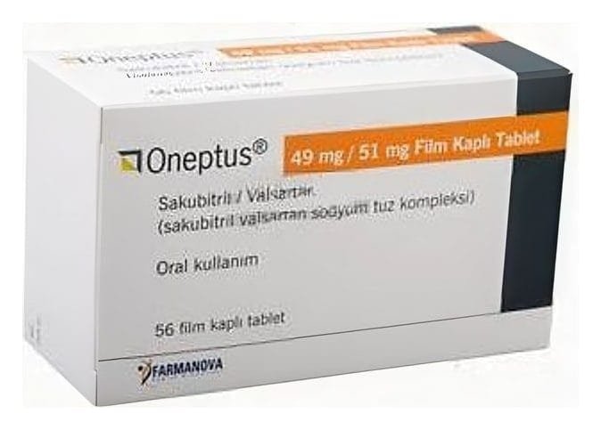

Oneptus 49 mg/51 mg Film Kaplı Tablet, 56 Adet

Ne için kullanılır
KT · Bölüm 1ONEPTUS 49 mg / 51 mg tabletler, bir yüzünde “NVR”, diğer yüzünde “L1” baskısı olan, kenarları eğimli, çentiksiz, soluk sarı, oval, bikonveks film kaplı tabletlerdir.
ONEPTUS anjiyotensin reseptör neprilisin inhibitörü olarak adlandırılan ilaç sınıfına dahildir; yutulduktan sonra sakubitril ve valsartan olmak üzere iki etkin maddeye ayrışır. ONEPTUS yetişkinlerde bir çeşit uzun dönem (kronik, müzmin) kalp yetersizliğinin tedavisinde kullanılır.
ONEPTUS, kronik kalp yetersizliği olan erişkin hastalarda kalp ve damar hastalıkları kaynaklı ölüm ve kalp yetersizliği nedeniyle hastaneye yatış riskini azaltmak için kullanılır. Yararları en açık şekilde kalbin sol karıncığından fırlatılan kan oranı normalin altında olan hastalarda görülür.
Bu kalp yetersizliği türü, kalbin güçsüzleşip akciğerlere ve vücudun geri kalanına yeterli
kan pompalayamaması şeklinde ortaya çıkar. Kalp yetersizliğinin en yaygın belirtileri nefes darlığı, yorgunluk, halsizlik ve ayak bileğinde şişliktir.
ONEPTUS’un nasıl etki gösterdiği veya bu ilacın neden size reçete edildiği ile ilgili sorularınız varsa doktorunuza veya eczacınıza sorunuz.